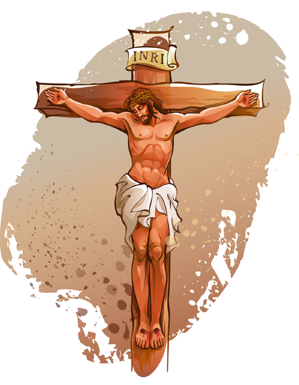

കുരിശിന്റെ വഴി
കുരിശിന്റെ വഴി
പ്രാരംഭഗാനം
കുരിശില് മരിച്ചവനേ, കുരിശാലേ
വിജയം വരിച്ചവനേ,
മിഴിനീരൊഴുക്കിയങ്ങേ, കുരിശിന്റെ
വഴിയേ വരുന്നു ഞങ്ങള്
ലോകൈക നാഥാ, നിന്
ശിഷ്യരായ്ത്തീരുവാ-
നാശിപ്പോനെന്നുമെന്നും
കുരിശുവഹിച്ചു നിന്
കാല്പ്പാടു പിഞ്ചെല്ലാന്
കല്പിച്ച നായകാ.
നിന് ദിവ്യരക്തത്താ-
ലെന് പാപമാലിന്യം
കഴുകേണമേ, ലോകനാഥാ.
പ്രാരംഭ പ്രാര്ത്ഥന
നിത്യനായ ദൈവമേ, ഞങ്ങള് അങ്ങയെ ആരാധിക്കുന്നു. പാപികളായ മനുഷ്യര്ക്കുവേണ്ടി ജീവന് ബലികഴിക്കുവാന് തിരുമനസ്സായ കര്ത്താവേ ഞങ്ങള് അങ്ങേയ്ക്ക് നന്ദി പറയുന്നു.
അങ്ങു ഞങ്ങളെ സ്നേഹിച്ചു: അവസാനം വരെ സ്നേഹിച്ചു. സ്നേഹിതനു വേണ്ടി ജീവന് ബലികഴിക്കുന്നതിനേക്കാള് വലിയ സ്നേഹമില്ലെന്ന് അങ്ങ് അരുളിചെയ്തിട്ടുണ്ടല്ലോ. പീലാത്തോസിന്റെ ഭവനം മുതല് ഗാഗുല്ത്താവരെ കുരിശും വഹിച്ചുകൊണ്ടുള്ള അവസാനയാത്ര അങ്ങേ സ്നേഹത്തിന്റെ ഏറ്റം മഹത്തായ പ്രകടനമായിരുന്നു. കണ്ണുനീരിന്റെയും രക്തത്തിന്റെയും ആ വഴിയില്ക്കൂടി വ്യാകുലയായ മാതാവിന്റെ പിന്നാലെ ഒരു തീര്ത്ഥയാത്രയായി ഞങ്ങളും അങ്ങയെ അനുഗമിക്കുന്നു.സ്വര്ഗ്ഗത്തിലേയ്ക്കുള്ള വഴി ഞെരുക്കമുള്ളതും, വാതില് ഇടുങ്ങിയതുമാണെന്ന് ഞങ്ങളെ അറിയിച്ച കര്ത്താവേ, ജീവിതത്തിന്റെ ഓരോ ദിവസവും ഞങ്ങള്ക്കുണ്ടാകുന്ന വേദനകളും കുരിശുകളും സന്തോഷത്തോടെ സഹിച്ചു കൊണ്ട് ആ ഇടുങ്ങിയ വഴിയില്ക്കൂടി സഞ്ചരിയ്ക്കുവാന് ഞങ്ങളെ സഹായിക്കണമേ.
കര്ത്താവേ അനുഗ്രഹിക്കണമേ.
പരിശുദ്ധ ദൈവമാതാവേ, ക്രൂശിതനായ കര്ത്താവിന്റെ തിരുമുറിവുകള് എന്റെ ഹൃദയത്തില് പതിപ്പിച്ചുറപ്പിക്കണമേ.
( ഒന്നാം സ്ഥലത്തേയ്ക്കു പോകുമ്പോള് )
മരണത്തിനായ് വിധിച്ചു, കറയറ്റ
ദൈവത്തിന് കുഞ്ഞാടിനെ
അപരാധിയായ് വിധിച്ചു കല്മഷം
കലരാത്ത കര്ത്താവിനെ.
അറിയാത്ത കുറ്റങ്ങള്
നിരയായ്ചുമത്തി
പരിശുദ്ധനായ നിന്നില്
കൈവല്യദാതാ, നിന്
കാരുണ്യം കൈക്കൊണ്ടോര്
കദനത്തിലാഴ്ത്തി നിന്നെ.
അവസാനവിധിയില് നീ-
യലിവാര്ന്നു ഞങ്ങള്ക്കാ-
യരുളേണെമേ നാകഭാഗ്യം
ഒന്നാം സ്ഥലം
ഈശോമിശിഹാ മരണത്തിനു വിധിക്കപ്പെടുന്നു.
ഈശോമിശിഹായേ, ഞങ്ങള് അങ്ങയെ കുമ്പിട്ടാരാധിക്കുന്നു:
എന്തുകൊണ്ടെന്നാല് വിശുദ്ധ കുരിശിനാല് അങ്ങു ലോകത്തെ വീണ്ടുരക്ഷിച്ചു
മനുഷ്യകുലത്തിന്റെ പാപപരിഹാരത്തിനുള്ള ബലി ആരംഭിച്ചുകഴിഞ്ഞു... ഈശോ പീലാത്തോസിന്റെ മുമ്പില് നില്ക്കുന്നു... അവിടുത്തെ ഒന്നു നോക്കുക... ചമ്മട്ടിയടിയേറ്റ ശരീരം... രക്തത്തില് ഒട്ടിപ്പിടിച്ച വസ്ത്രങ്ങള് ... തലയില് മുള്മുടി... ഉറക്കമൊഴിഞ്ഞ കണ്ണുകള് ... ക്ഷീണത്താല് വിറയ്ക്കുന്ന കൈകാലുകള് ... ദാഹിച്ചുവരണ്ട നാവ്... ഉണങ്ങിയ ചുണ്ടുകള്. പീലാത്തോസ് വിധിവാചകം ഉച്ചരിക്കുന്നു... കുറ്റമില്ലാത്തവന് കുറ്റക്കാരനായി വിധിക്കപ്പെട്ടു... എങ്കിലും,അവിടുന്ന് എല്ലാം നിശബ്ധനായി സഹിക്കുന്നു.
എന്റെ ദൈവമായ കര്ത്താവേ, അങ്ങു കുറ്റമറ്റവനായിരുന്നിട്ടും കുരിശുമരണത്തിനു വിധിക്കപ്പെട്ടുവല്ലോ. എന്നെ മറ്റുള്ളവര് തെറ്റിദ്ധരിക്കുമ്പോഴും, നിര്ദ്ദയമായി വിമര്ശിക്കുമ്പോഴും കുറ്റക്കാരനായി വിധിക്കുമ്പോഴും അതെല്ലാം അങ്ങയെപ്പോലെ സമചിത്തനായി സഹിക്കുവാന് എന്നെയനുഗ്രഹിക്കണമേ. അവരുടെ ഉദ്ദേശത്തെപ്പറ്റി ചിന്തിക്കാതെ അവര്ക്കുവേണ്ടി ആത്മാര്ത്ഥമായി പ്രാര്ത്ഥിക്കുവാന് എന്നെ സഹായിക്കണമേ.
1. സ്വര്ഗ്ഗ. 1. നന്മ.
കര്ത്താവേ അനുഗ്രഹിക്കണമേ.
പരിശുദ്ധ ദൈവമാതാവേ, ക്രൂശിതനായ കര്ത്താവിന്റെ തിരുമുറിവുകള് എന്റെ ഹൃദയത്തില് പതിപ്പിച്ചുറപ്പിക്കണമേ.
( രണ്ടാം സ്ഥലത്തേയ്ക്കു പോകുമ്പോള് )
കുരിശു ചുമന്നിടുന്നു ലോകത്തിന്
വിനകള് ചുമന്നിടുന്നു.
നീങ്ങുന്നു ദിവ്യ നാഥന് നിന്ദനം
നിറയും നിരത്തിലൂടെ.
"എന് ജനമേ,ചൊല്ക
ഞാനെന്തു ചെയ്തു
കുരിശെന്റെ തോളിലേറ്റാന് ?
പൂന്തേന് തുളുമ്പുന്ന
നാട്ടില് ഞാന് നിങ്ങളെ
ആശയോടാനയിച്ചു:
എന്തേ,യിദം നിങ്ങ-
ളെല്ലാം മറന്നെന്റെ
ആത്മാവിനാതങ്കമേറ്റി ?"
രണ്ടാം സ്ഥലം
ഈശോമിശിഹാ കുരിശു ചുമക്കുന്നു
ഈശോമിശിഹായേ, ഞങ്ങള് അങ്ങയെ കുമ്പിട്ടാരാധിക്കുന്നു:
എന്തുകൊണ്ടെന്നാല് വിശുദ്ധ കുരിശിനാല് അങ്ങു ലോകത്തെ വീണ്ടുരക്ഷിച്ചു
ഭാരമേറിയ കുരിശും ചുമന്നുകൊണ്ട് അവിടുന്നു മുന്നോട്ടു നീങ്ങുന്നു... ഈശോയുടെ ചുറ്റും നോക്കുക... സ്നേഹിതന്മാര് ആരുമില്ല.. യൂദാസ് അവിടുത്തെ ഒറ്റിക്കൊടുത്തു... പത്രോസ് അവിടുത്തെ പരിത്യജിച്ചു... മറ്റു ശിഷ്യന്മാര് ഓടിയൊളിച്ചു.അവിടുത്തെ അത്ഭുതപ്രവര്ത്തികള് കണ്ടവരും അവയുടെ ഫലമനുഭവിച്ചവരും ഇപ്പോള് എവിടെ?... ഓശാനപാടി എതിരേറ്റവരും ഇന്നു നിശബ്ദരായിരിക്കുന്നു...ഈശോയെ സഹായിക്കുവാനോ, ഒരാശ്വാസവാക്കു പറയുവാനോ അവിടെ ആരുമില്ല...
എന്നെ അനുഗമിക്കുവാന് ആഗ്രഹിക്കുന്നവന് സ്വയം പരിത്യജിച്ചു തന്റെ കുരിശും വഹിച്ചുകൊണ്ട് എന്റെ പിന്നാലെ വരട്ടെ എന്ന് അങ്ങ് അരുളിചെയ്തിട്ടുണ്ടല്ലോ. എന്റെ സങ്കടങ്ങളുടെയും ക്ലേശങ്ങളുടെയും കുരിശു ചുമന്നുകൊണ്ട് ഞാന് അങ്ങേ രക്തമണിഞ്ഞ കാല്പാടുകള് പിന്തുടരുന്നു. വലയുന്നവരെയും ഭാരം ചുമക്കുന്നവരെയും ആശ്വസിപ്പിക്കുന്ന കര്ത്താവേ എന്റെ ക്ലേശങ്ങളെല്ലാം പരാതികൂടാതെ സഹിക്കുവാന് എന്നെ സഹായിക്കണമേ.
1. സ്വര്ഗ്ഗ. 1. നന്മ.
കര്ത്താവേ അനുഗ്രഹിക്കണമേ.
പരിശുദ്ധ ദൈവമാതാവേ, ക്രൂശിതനായ കര്ത്താവിന്റെ തിരുമുറിവുകള് എന്റെ ഹൃദയത്തില് പതിപ്പിച്ചുറപ്പിക്കണമേ.
( മൂന്നാം സ്ഥലത്തേയ്ക്കു പോകുമ്പോള് )
കുരിശിന് കനത്തഭാരം താങ്ങുവാന്
കഴിയാതെ ലോകനാഥന്
പാദങ്ങള് പതറി വീണു കല്ലുകള്
നിറയും പെരുവഴിയില്
തൃപ്പാദം കല്ലിന്മേല്
തട്ടിമുറിഞ്ഞു,
ചെന്നിണം വാര്ന്നൊഴുകി :
മാനവരില്ല
വാനവരില്ല
താങ്ങിത്തുണച്ചീടുവാന്
അനുതാപമൂറുന്ന
ചുടുകണ്ണുനീര് തൂകി-
യണയുന്നു മുന്നില് ഞങ്ങള് .
മൂന്നാം സ്ഥലം
ഈശോമിശിഹാ ഒന്നാം പ്രാവശ്യം വീഴുന്നു.
ഈശോമിശിഹായേ, ഞങ്ങള് അങ്ങയെ കുമ്പിട്ടാരാധിക്കുന്നു:
എന്തുകൊണ്ടെന്നാല് വിശുദ്ധ കുരിശിനാല് അങ്ങു ലോകത്തെ വീണ്ടുരക്ഷിച്ചു
കല്ലുകള് നിറഞ്ഞ വഴി.... ഭാരമുള്ള കുരിശ്.... ക്ഷീണിച്ച ശരീരം... വിറയ്ക്കുന്ന കാലുകള്... അവിടുന്നു മുഖം കുത്തി നിലത്തു വീഴുന്നു.... മുട്ടുകള് പൊട്ടി രക്തമൊലിക്കുന്നു... യൂദന്മാര് അവിടുത്തെ പരിഹസിക്കുന്നു... പട്ടാളക്കാര് അടിക്കുന്നു... ജനക്കൂട്ടം ആര്പ്പുവിളിക്കുന്നു..... അവിടുന്നു മിണ്ടുന്നില്ല.....
"ഞാന് സഞ്ചരിയ്ക്കുന്ന വഴികളില് അവര് എനിക്കു കെണികള് വെച്ചു. ഞാന് വലത്തേയ്ക്ക് തിരിഞ്ഞു നോക്കി എന്നെ അറിയുന്നവര് ആരുമില്ല. ഓടിയൊളിക്കുവാന് ഇടമില്ല, എന്നെ രക്ഷിക്കുവാന് ആളുമില്ല."
"അവിടുന്നു നമ്മുടെ ഭാരം ചുമക്കുന്നു. നമുക്കുവേണ്ടി അവിടുന്നു സഹിച്ചു."
കര്ത്താവേ, ഞാന് വഹിക്കുന്ന കുരിശിനും ഭാരമുണ്ട്. പലപ്പോഴും കുരിശോടുകൂടെ ഞാനും നിലത്തു വീണുപോകുന്നു. മറ്റുള്ളവര് അതുകണ്ടു പരിഹസിക്കുകയും, എന്റെ വേദന വര്ദ്ദിപ്പിക്കുകയും ചെയ്യാറുണ്ട്. കര്ത്താവേ എനിക്കു വീഴ്ചകള് ഉണ്ടാകുമ്പോള് എന്നെത്തന്നെ നീയന്ത്രിക്കുവാന് എന്നെ പഠിപ്പിക്കണമേ. കുരിശു വഹിക്കുവാന് ശക്തിയില്ലാതെ ഞാന് തളരുമ്പോള് എന്നെ സഹായിക്കണമേ.
1. സ്വര്ഗ്ഗ. 1. നന്മ.
കര്ത്താവേ അനുഗ്രഹിക്കണമേ.
പരിശുദ്ധ ദൈവമാതാവേ, ക്രൂശിതനായ കര്ത്താവിന്റെ തിരുമുറിവുകള് എന്റെ ഹൃദയത്തില് പതിപ്പിച്ചുറപ്പിക്കണമേ.
( നാലാം സ്ഥലത്തേയ്ക്കു പോകുമ്പോള് )
വഴിയില്ക്കരഞ്ഞു വന്നോരമ്മയെ
തനയന് തിരിഞ്ഞുനോക്കി
സ്വര്ഗ്ഗിയകാന്തി ചിന്തും മിഴികളില്
കൂരമ്പു താണിറങ്ങി.
"ആരോടു നിന്നെ ഞാന്
സാമ്യപ്പെടുത്തും
കദനപ്പെരുങ്കടലേ?"
ആരറിഞ്ഞാഴത്തി-
ലലതല്ലിനില്ക്കുന്ന
നിന് മനോവേദന?
നിന് കണ്ണുനീരാല്
കഴുകേണമെന്നില്
പതിയുന്ന മാലിന്യമെല്ലാം.
നാലാം സ്ഥലം
ഈശോ വഴിയില് വെച്ചു തന്റെ മാതാവിനെ കാണുന്നു
ഈശോമിശിഹായേ, ഞങ്ങള് അങ്ങയെ കുമ്പിട്ടാരാധിക്കുന്നു:
എന്തുകൊണ്ടെന്നാല് വിശുദ്ധ കുരിശിനാല് അങ്ങു ലോകത്തെ വീണ്ടുരക്ഷിച്ചു
കുരിശുയാത്ര മുന്നോട്ടു നീങ്ങുന്നു... ഇടയ്ക്ക് സങ്കടകരമായ ഒരു കൂടികാഴ്ച... അവിടുത്തെ മാതാവു ഓടിയെത്തുന്നു... അവര് പരസ്പരം നോക്കി... കവിഞ്ഞൊഴുകുന്ന നാല് കണ്ണുകള്... വിങ്ങിപ്പൊട്ടുന്ന രണ്ടു ഹൃദയങ്ങള്... അമ്മയും മകനും സംസാരിക്കുന്നില്ല... മകന്റെ വേദന അമ്മയുടെ ഹൃദയം തകര്ക്കുന്നു... അമ്മയുടെ വേദന മകന്റെ ദുഃഖം വര്ദ്ധിപ്പിക്കുന്നു..
നാല്പതാം ദിവസം ഉണ്ണിയെ ദേവാലയത്തില് കാഴ്ച വെച്ച സംഭവം മാതാവിന്റെ ഓര്മ്മയില് വന്നു. "നിന്റെ ഹൃദയത്തില് ഒരു വാള് കടക്കും" എന്നു പരിശുദ്ധനായ ശിമയോന് അന്ന് പ്രവചിച്ചു.
"കണ്ണുനീരോടെ വിതയ്ക്കുന്നവന് സന്തോഷത്തോടെ കൊയ്യുന്നു". "ഈ ലോകത്തിലെ നിസ്സാരസങ്കടങ്ങള് നമുക്കു നിത്യഭാഗ്യം പ്രദാനം ചെയ്യുന്നു."
ദുഃഖസമുദ്രത്തില് മുഴുകിയ ദിവ്യ രക്ഷിതാവേ, സഹനത്തിന്റെ ഏകാന്ത നിമിഷങ്ങളില് അങ്ങേ മാതാവിന്റെ മാതൃക ഞങ്ങളെ ആശ്വസിപ്പിക്കട്ടെ. അങ്ങയുടെയും അങ്ങേ മാതാവിന്റെയും സങ്കടത്തിനു കാരണം ഞങ്ങളുടെ പാപങ്ങള് ആണെന്ന് ഞങ്ങള് അറിയുന്നു. അവയെല്ലാം പരിഹരിക്കുവാന് ഞങ്ങളെ സഹായിക്കണമേ.
1. സ്വര്ഗ്ഗ. 1. നന്മ.
കര്ത്താവേ അനുഗ്രഹിക്കണമേ.
പരിശുദ്ധ ദൈവമാതാവേ, ക്രൂശിതനായ കര്ത്താവിന്റെ തിരുമുറിവുകള് എന്റെ ഹൃദയത്തില് പതിപ്പിച്ചുറപ്പിക്കണമേ.
( അഞ്ചാം സ്ഥലത്തേയ്ക്കു പോകുമ്പോള് )
കുരിശു ചുമന്നു നീങ്ങും നാഥനെ
ശിമയോന് തുണച്ചീടുന്നു.
നാഥാ, നിന് കുരിശു താങ്ങാന് കൈവന്ന
ഭാഗ്യമേ, ഭാഗ്യം.
നിന് കുരിശെത്രയോ
ലോലം, നിന് നുക-
മാനന്ദ ദായകം
അഴലില് വീണുഴലുന്നോര്-
ക്കവലംബമേകുന്ന
കുരിശേ, നമിച്ചിടുന്നു.
സുരലോകനാഥാ നിന്
കുരിശൊന്നു താങ്ങുവാന്
തരണേ വരങ്ങള് നിരന്തം.
അഞ്ചാം സ്ഥലം
ശിമയോന് ഈശോയെ സഹായിക്കുന്നു
ഈശോമിശിഹായേ, ഞങ്ങള് അങ്ങയെ കുമ്പിട്ടാരാധിക്കുന്നു:
എന്തുകൊണ്ടെന്നാല് വിശുദ്ധ കുരിശിനാല് അങ്ങു ലോകത്തെ വീണ്ടുരക്ഷിച്ചു
ഈശോ വളരെയധികം തളര്ന്നു കഴിഞ്ഞു... ഇനി കുരിശോടുകൂടെ മുന്നോട്ടു നീങ്ങുവാന് ശക്തനല്ല... അവിടുന്നു വഴിയില് വെച്ചു തന്നെ മരിച്ചുപോയേക്കുമെന്ന് യൂദന്മാര് ഭയന്നു... അപ്പോള് ശിമയോന് എന്നൊരാള് വയലില് നിന്നു വരുന്നത് അവര് കണ്ടു. കെവുറീന്കാരനായ ആ മനുഷ്യന് അലക്സാണ്ടറിന്റെയും റോപ്പോസിന്റെയും പിതാവായിരുന്നു... അവിടുത്തെ കുരിശുചുമക്കാന് അവര് അയാളെ നിര്ബന്ധിച്ചു - അവര്ക്ക് ഈശോയോട് സഹതാപം തോന്നിയിട്ടല്ല, ജീവനോടെ അവിടുത്തെ കുരിശില് തറയ്ക്കണമെന്ന് അവര് തീരുമാനിച്ചിരുന്നു.
കരുണാനിധിയായ കര്ത്താവേ, ഈ സ്ഥിതിയില് ഞാന് അങ്ങയെ കണ്ടിരുന്നുവെങ്കില് എന്നെത്തന്നെ വിസ്മരിച്ചു ഞാന് അങ്ങയെ സഹായിക്കുമായിരുന്നു. എന്നാല് "എന്റെ ഈ ചെറിയ സഹോദരന്മാരില് ആര്ക്കെങ്കിലും നിങ്ങള് സഹായം ചെയ്തപ്പോഴെല്ലാം എനിക്കുതന്നെയാണ് ചെയ്തത് എന്ന് അങ്ങ് അരുളിചെയ്തിട്ടുണ്ടല്ലോ." അതിനാല് ചുറ്റുമുള്ളവരില് അങ്ങയെ കണ്ടുകൊണ്ട് കഴിവുള്ള വിധത്തിലെല്ലാം അവരെ സഹായിക്കുവാന് എന്നെ അനുഗ്രഹിക്കണമേ. അപ്പോള് ഞാനും ശിമയോനെപ്പോലെ അനുഗ്രഹീതനാകും, അങ്ങേ പീഡാനുഭവം എന്നിലൂടെ പൂര്ത്തിയാവുകയും ചെയ്യും.
1. സ്വര്ഗ്ഗ. 1. നന്മ.
കര്ത്താവേ അനുഗ്രഹിക്കണമേ.
പരിശുദ്ധ ദൈവമാതാവേ, ക്രൂശിതനായ കര്ത്താവിന്റെ തിരുമുറിവുകള് എന്റെ ഹൃദയത്തില് പതിപ്പിച്ചുറപ്പിക്കണമേ.
( ആറാം സ്ഥലത്തേയ്ക്കു പോകുമ്പോള് )
വാടിത്തളര്ന്നു മുഖം -നാഥന്റെ
കണ്ണുകള് താണുമങ്ങി
വേറോനിക്കാ മിഴിനീര് തൂകിയ-
ദിവ്യാനനം തുടച്ചു.
മാലാഖമാര്ക്കെല്ലാ-
മാനന്ദമേകുന്ന
മാനത്തെ പൂനിലാവേ,
താബോര് മാമല -
മേലേ നിന് മുഖം
സൂര്യനെപ്പോലെ മിന്നി.
ഇന്നാമുഖത്തിന്റെ
ലാവണ്യമൊന്നാകെ
മങ്ങി, ദുഃഖത്തില് മുങ്ങി.
ആറാം സ്ഥലം
വേറോനിക്കാ മിശിഹായുടെ തിരുമുഖം തുടയ്ക്കുന്നു
ഈശോമിശിഹായേ, ഞങ്ങള് അങ്ങയെ കുമ്പിട്ടാരാധിക്കുന്നു:
എന്തുകൊണ്ടെന്നാല് വിശുദ്ധ കുരിശിനാല് അങ്ങു ലോകത്തെ വീണ്ടുരക്ഷിച്ചു
ഭക്തയായ വേറോനിക്കാ മിശിഹായെ കാണുന്നു... അവളുടെ ഹൃദയം സഹതാപത്താല് നിറഞ്ഞു... അവള്ക്ക് അവിടുത്തെ ആശ്വസിപ്പിക്കണം. പട്ടാളക്കാരുടെ മദ്ധ്യത്തിലൂടെ അവള് ഈശോയെ സമീപിക്കുന്നു... ആരെങ്കിലും എന്തെങ്കിലും പറഞ്ഞുകൊള്ളട്ടെ... സ്നേഹം പ്രതിബന്ധം അറിയുന്നില്ല... "പരമാര്ത്ഥഹൃദയര് അവിടുത്തെ കാണും". "അങ്ങില് ശരണപ്പെടുന്നവരാരും നിരാശരാവുകയില്ല." അവള് ഭക്തിപൂര്വ്വം തന്റെ തൂവാലയെടുത്തു... രക്തം പുരണ്ട മുഖം വിനയപൂര്വ്വം തുടച്ചു...
"എന്നോടു സഹതാപിക്കുന്നവരുണ്ടോ എന്ന് ഞാന് അന്വേഷിച്ചു നോക്കി. ആരെയും കണ്ടില്ല. എന്നെയാശ്വസിപ്പിക്കാന് ആരുമില്ല." പ്രവാചകന് വഴി അങ്ങ് അരുളിച്ചെയ്ത ഈ വാക്കുകള് എന്റെ ചെവികളില് മുഴങ്ങിക്കൊണ്ടിരിയ്ക്കുന്നു. സ്നേഹം നിറഞ്ഞ കര്ത്താവേ, വേറോനിക്കായെപ്പോലെ അങ്ങയോടു സഹതപിക്കുവാനും അങ്ങയെ ആശ്വസിപ്പിക്കുവാനും ഞാന് ആഗ്രഹിക്കുന്നു. അങ്ങേ പീഡാനുഭവത്തിന്റെ മായാത്ത മുദ്ര എന്റെ ഹൃദയത്തില് പതിക്കണമേ.
1. സ്വര്ഗ്ഗ. 1. നന്മ.
കര്ത്താവേ അനുഗ്രഹിക്കണമേ.
പരിശുദ്ധ ദൈവമാതാവേ, ക്രൂശിതനായ കര്ത്താവിന്റെ തിരുമുറിവുകള് എന്റെ ഹൃദയത്തില് പതിപ്പിച്ചുറപ്പിക്കണമേ.
( ഏഴാം സ്ഥലത്തേയ്ക്കു പോകുമ്പോള് )
ഉച്ചവെയിലില് പൊരിഞ്ഞു-ദുസ്സഹ
മര്ദ്ദനത്താല് വലഞ്ഞു
ദേഹം തളര്ന്നു താണു-രക്ഷകന്
വീണ്ടും നിലത്തുവീണു.
ലോകപാപങ്ങളാ-
ണങ്ങയെ വീഴിച്ചു
വേദനിപ്പിച്ചതേവം;
ഭാരം നിറഞ്ഞൊരാ-
ക്രൂശു നിര്മ്മിച്ചതെന്
പാപങ്ങള് തന്നെയല്ലോ.
താപം കലര്ന്നങ്ങേ
പാദം പുണര്ന്നു ഞാന്
കേഴുന്നു: കനിയേണമെന്നില്.
ഏഴാം സ്ഥലം
ഈശോമിശിഹാ രണ്ടാം പ്രാവശ്യം വീഴുന്നു
ഈശോമിശിഹായേ, ഞങ്ങള് അങ്ങയെ കുമ്പിട്ടാരാധിക്കുന്നു:
എന്തുകൊണ്ടെന്നാല് വിശുദ്ധ കുരിശിനാല് അങ്ങു ലോകത്തെ വീണ്ടുരക്ഷിച്ചു
ഈശോ ബലഹീനനായി വീണ്ടും നിലത്തു വീഴുന്നു... മുറിവുകളില് നിന്നു രക്തമൊഴുകുന്നു... ശരീരമാകെ വേദനിക്കുന്നു. "ഞാന് പൂഴിയില് വീണുപോയി എന്റെ ആത്മാവു ദു:ഖിച്ചു തളര്ന്നു" ചുറ്റുമുള്ളവര് പരിഹസിക്കുന്നു... അവിടുന്ന് അതൊന്നും ഗണ്യമാക്കുന്നില്ല... "എന്റെ പിതാവ് എനിക്കുതന്ന പാനപാത്രം ഞാന് കുടിക്കേണ്ടതല്ലയോ?" പിതാവിന്റെ ഇഷ്ടം നിറവേറ്റാനല്ലാതെ അവിടുന്നു മറ്റൊന്നും ആഗ്രഹിക്കുന്നില്ല.
മനുഷ്യപാപങ്ങളുടെ ഭാരമെല്ലാം ചുമന്ന മിശിഹായെ, അങ്ങയെ ആശ്വസിപ്പിക്കുവാനായി ഞങ്ങള് അങ്ങയെ സമീപിക്കുന്നു. അങ്ങയെക്കൂടാതെ ഞങ്ങള്ക്ക് ഒന്നും ചെയ്യുവാന് ശക്തിയില്ല. ജീവിതത്തിന്റെ ഭാരത്താല് ഞങ്ങള് തളര്ന്നു വീഴുകയും എഴുന്നേല്ക്കുവാന് കഴിവില്ലാതെ വലയുകയും ചെയ്യുന്നു.അങ്ങേ തൃക്കൈ നീട്ടി ഞങ്ങളെ സഹായിക്കണമേ.
1. സ്വര്ഗ്ഗ. 1. നന്മ.
കര്ത്താവേ അനുഗ്രഹിക്കണമേ.
പരിശുദ്ധ ദൈവമാതാവേ, ക്രൂശിതനായ കര്ത്താവിന്റെ തിരുമുറിവുകള് എന്റെ ഹൃദയത്തില് പതിപ്പിച്ചുറപ്പിക്കണമേ.
( എട്ടാം സ്ഥലത്തേയ്ക്കു പോകുമ്പോള് )
"ഓര്ശ്ലെമിന് പുത്രീമാരേ,നിങ്ങളീ-
ന്നെന്നെയോര്ത്തെന്തിനേവം
കരയുന്നു? നിങ്ങളെയും സുതരേയു-
മോര്ത്തോര്ത്തു കേണുകൊള്വിന്:"
വേദന തിങ്ങുന്ന
കാലം വരുന്നു-
കണ്ണീരണിഞ്ഞകാലം
മലകളേ, ഞങ്ങളെ
മൂടുവിന് വേഗമെ-
ന്നാരവം കേള്ക്കുമെങ്ങും.
കരള് നൊന്തു കരയുന്ന
നാരീഗണത്തിനു
നാഥന് സമാശ്വാസമേകി.
എട്ടാം സ്ഥലം
ഈശോമിശിഹാ ഓര്ശ്ലം നഗരിയിലെ സ്ത്രീകളെ ആശ്വസിപ്പിക്കുന്നു
ഈശോമിശിഹായേ, ഞങ്ങള് അങ്ങയെ കുമ്പിട്ടാരാധിക്കുന്നു:
എന്തുകൊണ്ടെന്നാല് വിശുദ്ധ കുരിശിനാല് അങ്ങു ലോകത്തെ വീണ്ടുരക്ഷിച്ചു
ഓര്ശ്ലത്തിന്റെ തെരുവുകള് ശബ്ദായമാനമായി... പതിവില്ലാത്ത ബഹളം കേട്ട് സ്ത്രീജനങ്ങള് വഴിയിലേയ്ക്കു വരുന്നു... അവര്ക്കു സുപരിചിതനായ ഈശോ കൊലക്കളത്തിലേയ്ക്ക് നയിക്കപ്പെടുന്നു... അവിടുത്തെ പേരില് അവര്ക്ക് അനുകമ്പ തോന്നി... ഓശാന ഞായറാഴ്ചത്തെ ഘോഷയാത്ര അവരുടെ ഓര്മ്മയില് വന്നു... സൈത്തിന് കൊമ്പുകളും ജയ് വിളികളും... അവര് കണ്ണുനീര്വാര്ത്തു കരഞ്ഞു... അവരുടെ സഹതാപപ്രകടനം അവിടുത്തെ ആശ്വസിപ്പിച്ചു... അവിടുന്ന് അവരോടു പറയുന്നു: "നിങ്ങളെയും നിങ്ങളുടെ കുഞ്ഞുങ്ങളെയും ഓര്ത്തു കരയുവിന്."
ഏതാനും വര്ഷങ്ങള്ക്കുള്ളില് ഓര്ശ്ലം ആക്രമിക്കപ്പെടും... അവരും അവരുടെ കുട്ടികളും പട്ടിണി കിടന്നു മരിക്കും... ആ സംഭവം അവിടുന്നു പ്രവചിക്കുകയായിരുന്നു... അവിടുന്നു സ്വയം മറന്ന് അവരെ ആശ്വസിപ്പിക്കുന്നു.
എളിയവരുടെ സങ്കേതമായ കര്ത്താവേ, ഞെരുക്കത്തിന്റെ കാലത്ത് ഞങ്ങളെ ആശ്വസിപ്പിക്കുന്ന ദൈവമേ, അങ്ങേ ദാരുണമായ പീഡകള് ഓര്ത്ത് ഞങ്ങള് ദുഃഖിക്കുന്നു. അവയ്ക്ക് കാരണമായ ഞങ്ങളുടെ പാപങ്ങളോര്ത്ത് കരയുവാനും ഭാവിയില് പരിശുദ്ധരായി ജീവിക്കുവാനും ഞങ്ങളെ അനുഗ്രഹിക്കണമേ.
1. സ്വര്ഗ്ഗ. 1. നന്മ.
കര്ത്താവേ അനുഗ്രഹിക്കണമേ.
പരിശുദ്ധ ദൈവമാതാവേ, ക്രൂശിതനായ കര്ത്താവിന്റെ തിരുമുറിവുകള് എന്റെ ഹൃദയത്തില് പതിപ്പിച്ചുറപ്പിക്കണമേ.
( ഒന്പതാം സ്ഥലത്തേയ്ക്കു പോകുമ്പോള് )
കൈകാലുകള് കുഴഞ്ഞു - നാഥന്റെ
തിരുമെയ് തളര്ന്നുലഞ്ഞു
കുരിശുമായ് മൂന്നാമതും പൂഴിയില്
വീഴുന്നു ദൈവപുത്രന്
"മെഴുകുപോലെന്നുടെ
ഹൃദയമുരുകി
കണ്ഠം വരണ്ടുണങ്ങി
താണുപോയ് നാവെന്റെ
ദേഹം നുറുങ്ങി
മരണം പറന്നിറങ്ങി"
വളരുന്നു ദുഃഖങ്ങള്
തളരുന്നു പൂമേനി
ഉരുകുന്നു കരളിന്റെയുള്ളം.
ഒന്പതാം സ്ഥലം
ഈശോ മൂന്നാം പ്രാവശ്യം വീഴുന്നു
ഈശോമിശിഹായേ, ഞങ്ങള് അങ്ങയെ കുമ്പിട്ടാരാധിക്കുന്നു:
എന്തുകൊണ്ടെന്നാല് വിശുദ്ധ കുരിശിനാല് അങ്ങു ലോകത്തെ വീണ്ടുരക്ഷിച്ചു
മുന്നോട്ടു നീങ്ങുവാന് അവിടുത്തേയ്ക്ക് ഇനി ശക്തിയില്ല. രക്തമെല്ലാം തീരാറായി... തല കറങ്ങുന്നു... ശരീരം വിറയ്ക്കുന്നു... അവിടുന്ന് അതാ നിലംപതിക്കുന്നു... സ്വയം എഴുന്നേല്ക്കുവാന് ശക്തിയില്ല... ശത്രുക്കള് അവിടുത്തെ വലിച്ചെഴുന്നേല്പ്പിക്കുന്നു... ബലി പൂര്ത്തിയാകുവാന് ഇനി വളരെ സമയമില്ല... അവിടുന്നു നടക്കുവാന് ശ്രമിക്കുന്നു....
"നീ പീഡിപ്പിക്കുന്ന ഈശോയാകുന്നു ഞാന് " എന്നു ശാവോലിനോട് അരുളിച്ചെയ്ത വാക്കുകള് ഇപ്പോള് നമ്മെ നോക്കി അവിടുന്ന് ആവര്ത്തിക്കുന്നു.
ലോകപാപങ്ങള്ക്കു പരിഹാരം ചെയ്ത കര്ത്താവേ, അങ്ങേ പീഡകളുടെ മുമ്പില് എന്റെ വേദനകള് എത്ര നിസ്സാരമാകുന്നു. എങ്കിലും ജീവിതഭാരം നിമിത്തം, ഞാന് പലപ്പോഴും ക്ഷീണിച്ചുപോകുന്നു. പ്രയാസങ്ങള് എന്നെ അലട്ടികൊണ്ടിരിയ്ക്കുന്നു. ഒരു വേദന തീരും മുമ്പ് മറ്റൊന്നു വന്നുകഴിഞ്ഞു. ജീവിതത്തില് നിരാശനാകാതെ അവയെല്ലാം അങ്ങയെ ഓര്ത്തു സഹിക്കുവാന് എനിക്കു ശക്തി തരണമേ. എന്തെന്നാല് എന്റെ ജീവിതം ഇനി എത്ര നീളുമെന്ന് എനിക്കറിഞ്ഞുകൂടാ "ആര്ക്കും വേല ചെയ്യാന് പാടില്ലാത്ത രാത്രികാലം അടുത്തു വരികയാണല്ലോ"
1. സ്വര്ഗ്ഗ. 1. നന്മ.
കര്ത്താവേ അനുഗ്രഹിക്കണമേ.
പരിശുദ്ധ ദൈവമാതാവേ, ക്രൂശിതനായ കര്ത്താവിന്റെ തിരുമുറിവുകള് എന്റെ ഹൃദയത്തില് പതിപ്പിച്ചുറപ്പിക്കണമേ.
( പത്താം സ്ഥലത്തേയ്ക്കു പോകുമ്പോള് )
എത്തീ വിലാപയാത്ര കാല്വരി-
ക്കുന്നിന് മുകള്പ്പരപ്പില്
നാഥന്റെ വസ്ത്രമെല്ലാം ശത്രുക്ക-
ളൊന്നായുരിഞ്ഞു നീക്കി
വൈരികള് തിങ്ങിവ-
രുന്നെന്റെ ചുറ്റിലും
ഘോരമാം ഗര്ജ്ജനങ്ങള്
ഭാഗിച്ചെടുത്തന്റെ
വസ്ത്രങ്ങളെല്ലാം"
പാപികള് വൈരികള്.
നാഥാ, വിശുദ്ധിതന്
തൂവെള്ള വസ്ത്രങ്ങള്
കനിവാര്ന്നു ചാര്ത്തേണമെന്നെ.
പത്താം സ്ഥലം
ദിവ്യ രക്ഷകന്റെ വസ്ത്രങ്ങള് ഉരിഞ്ഞെടുക്കുന്നു
ഈശോമിശിഹായേ, ഞങ്ങള് അങ്ങയെ കുമ്പിട്ടാരാധിക്കുന്നു:
എന്തുകൊണ്ടെന്നാല് വിശുദ്ധ കുരിശിനാല് അങ്ങു ലോകത്തെ വീണ്ടുരക്ഷിച്ചു
ഗാഗുല്ത്തായില് എത്തിയപ്പോള് അവര് അവിടുത്തേയ്ക്ക് മീറ കലര്ത്തിയ വീഞ്ഞുകൊടുത്തു. എന്നാല് അവിടുന്ന് അത് സ്വീകരിച്ചില്ല. അവിടുത്തെ വസ്ത്രങ്ങള് നാലായി ഭാഗിച്ച് ഓരോരുത്തര് ഓരോ ഭാഗം എടുക്കുകയും ചെയ്തു. മേലങ്കി തയ്യല് കൂടാതെ നെയ്യപ്പെട്ടതായിരുന്നു. അത് ആര്ക്ക് ലഭിക്കണമെന്നു ചിട്ടിയിട്ടു തീരുമാനിക്കാം എന്ന് അവര് പരസ്പരം പറഞ്ഞു. "എന്റെ വസ്ത്രങ്ങള് അവര് ഭാഗിച്ചെടുത്തു.എന്റെ മേലങ്കിക്കുവേണ്ടി അവര് ചിട്ടിയിട്ടു" എന്നുള്ള തിരുവെഴുത്തു അങ്ങനെ അന്വര്ത്ഥമായി.
രക്തത്താല് ഒട്ടിപ്പിടിച്ചിരുന്ന വസ്ത്രങ്ങള് ഉരിഞ്ഞെടുക്കപ്പെട്ടപ്പോള് ദുസ്സഹമായ വേദനയനുഭവിച്ച മിശിഹായേ, പാപം നിറഞ്ഞ പഴയ മനുഷ്യനെ ഉരിഞ്ഞുമാറ്റി അങ്ങയെ ധരിക്കുവാനും, മറ്റൊരു ക്രിസ്തുവായി ജീവിക്കുവാനും എന്നെ അനുഗ്രഹിക്കണമേ.
1. സ്വര്ഗ്ഗ. 1. നന്മ.
കര്ത്താവേ അനുഗ്രഹിക്കണമേ.
പരിശുദ്ധ ദൈവമാതാവേ, ക്രൂശിതനായ കര്ത്താവിന്റെ തിരുമുറിവുകള് എന്റെ ഹൃദയത്തില് പതിപ്പിച്ചുറപ്പിക്കണമേ.
( പതിനൊന്നാം സ്ഥലത്തേയ്ക്കു പോകുമ്പോള് )
കുരിശില്ക്കിടത്തിടുന്നു നാഥന്റെ
കൈകാല് തറച്ചിടുന്നു-
മര്ത്യനു രക്ഷനല്കാനെത്തിയ
ദിവ്യമാം കൈകാലുകള്
"കനിവറ്റ വൈരികള്
ചേര്ന്നു തുളച്ചെന്റെ
കൈകളും കാലുകളും
പെരുകുന്നു വേദന-
യുരുകുന്നു ചേതന
നിലയറ്റ നീര്ക്കയം
മരണം പരത്തിയോ-
രിരുളില് കുടുങ്ങി ഞാന്
ഭയമെന്നെയൊന്നായ് വിഴുങ്ങി."
പതിനൊന്നാം സ്ഥലം
ഈശോമിശിഹാ കുരിശില് തറയ്ക്കപ്പെടുന്നു
ഈശോമിശിഹായേ, ഞങ്ങള് അങ്ങയെ കുമ്പിട്ടാരാധിക്കുന്നു:
എന്തുകൊണ്ടെന്നാല് വിശുദ്ധ കുരിശിനാല് അങ്ങു ലോകത്തെ വീണ്ടുരക്ഷിച്ചു
ഈശോയെ കുരിശില് കിടത്തി കൈകളിലും കാലുകളിലും അവര് ആണി തറയ്ക്കുന്നു... ആണിപ്പഴുതുകളിലേയ്ക്കു കൈകാലുകള് വലിച്ചു നീട്ടുന്നു... ഉഗ്രമായ വേദന... മനുഷ്യനു സങ്കല്പ്പിക്കാന് കഴിയാത്തവിധം ദുസ്സഹമായ പീഡകള്... എങ്കിലും അവിടുത്തെ അധരങ്ങളില് പരാതിയില്ല... കണ്ണുകളില് നൈരാശ്യമില്ല... പിതാവിന്റെ ഇഷ്ടം നിറവേറട്ടെ എന്ന് അവിടുന്നു പ്രാര്ത്ഥിക്കുന്നു.
ലോക രക്ഷകനായ കര്ത്താവേ, സ്നേഹത്തിന്റെ പുതിയ സന്ദേശവുമായി വന്ന അങ്ങയെ ലോകം കുരിശില് തറച്ചു. അങ്ങേ ലോകത്തില് നിന്നല്ലാത്തതിനാല് ലോകം അങ്ങയെ ദ്വേഷിച്ചു. യജമാനനേക്കാള് വലിയ ഭൃത്യനില്ലെന്ന് അങ്ങ് അരുളിചെയ്തിട്ടുണ്ടല്ലോ. അങ്ങയെ പീഡിപ്പിച്ചവര് ഞങ്ങളെയും പീഡിപ്പിക്കുമെന്നു ഞങ്ങളറിയുന്നു. അങ്ങയോടു കൂടെ കുരിശില് തറയ്ക്കപ്പെടുവാനും, ലോകത്തിനു മരിച്ച്, അങ്ങേയ്ക്കുവേണ്ടി മാത്രം ജീവിക്കുവാനും ഞങ്ങളെ അനുഗ്രഹിക്കണമേ.
1. സ്വര്ഗ്ഗ. 1. നന്മ.
കര്ത്താവേ അനുഗ്രഹിക്കണമേ.
പരിശുദ്ധ ദൈവമാതാവേ, ക്രൂശിതനായ കര്ത്താവിന്റെ തിരുമുറിവുകള് എന്റെ ഹൃദയത്തില് പതിപ്പിച്ചുറപ്പിക്കണമേ.
( പന്ത്രണ്ടാം സ്ഥലത്തേയ്ക്കു പോകുമ്പോള് )
കുരിശില് കിടന്നു ജീവന് പിരിയുന്നു
ഭുവനൈകനാഥനീശോ
സൂര്യന് മറഞ്ഞിരുണ്ടു-നാടെങ്ങു-
മന്ധകാരം നിറഞ്ഞു.
"നരികള്ക്കുറങ്ങുവാ-
നളയുണ്ടു, പറവയ്ക്കു
കൂടുണ്ടു പാര്ക്കുവാന്
നരപുത്രനൂഴിയില്
തലയൊന്നു ചായ്ക്കുവാ-
നിടമില്ലൊരേടവും"
പുല്ക്കൂടുതൊട്ടങ്ങേ
പുല്കുന്ന ദാരിദ്ര്യം
കുരിശോളം കൂട്ടായി വന്നു.
പന്ത്രണ്ടാം സ്ഥലം
ഈശോമിശിഹാ കുരിശിന്മേല് തൂങ്ങി മരിക്കുന്നു
ഈശോമിശിഹായേ, ഞങ്ങള് അങ്ങയെ കുമ്പിട്ടാരാധിക്കുന്നു:
എന്തുകൊണ്ടെന്നാല് വിശുദ്ധ കുരിശിനാല് അങ്ങു ലോകത്തെ വീണ്ടുരക്ഷിച്ചു
രണ്ടു കള്ളന്മാരുടെ നടുവില് അവിടുത്തെ അവര് കുരിശില് തറച്ചു... കുരിശില് കിടന്നുകൊണ്ട് ശത്രുക്കള്ക്കു വേണ്ടി അവിടുന്ന് പ്രാര്ത്ഥിക്കുന്നു... നല്ല കള്ളനെ ആശ്വസിപ്പിക്കുന്നു... മാതാവും മറ്റു സ്ത്രീകളും കരഞ്ഞുകൊണ്ട് കുരിശിനു താഴെ നിന്നിരുന്നു. "ഇതാ നിന്റെ മകന് " എന്ന് അമ്മയോടും, "ഇതാ നിന്റെ അമ്മ" എന്ന് യോഹന്നാനോടും അവിടുന്ന് അരുളിച്ചെയ്തു. പന്ത്രണ്ടുമണി സമയമായിരുന്നു. "എന്റെ പിതാവേ, അങ്ങേ കൈകളില് എന്റെ ആത്മാവിനെ ഞാന് സമര്പ്പിക്കുന്നു, എന്നരുളിച്ചെയ്ത് അവിടുന്ന് മരിച്ചു. പെട്ടെന്ന് സൂര്യന് ഇരുണ്ടു, മൂന്നുമണിവരെ ഭൂമിയിലെങ്ങും അന്ധകാരമായിരുന്നു. ദേവാലയത്തിലെ തിരശീല നടുവേ കീറിപ്പോയി. ഭൂമിയിളകി; പാറകള് പിളര്ന്നു; പ്രേതാലയങ്ങള് തുറക്കപ്പെട്ടു.
ശതാധിപന് ഇതെല്ലാം കണ്ട് ദൈവത്തെ സ്തുതിച്ചുകൊണ്ട് ഈ മനുഷ്യന് യഥാര്ത്ഥത്തില് നീതിമാനായിരുന്നു, എന്ന് വിളിച്ചുപറഞ്ഞു. കണ്ടു നിന്നവര് മാറത്തടിച്ചുകൊണ്ടു മടങ്ങിപ്പോയി.
"എനിക്ക് ഒരു മാമ്മോദീസാ മുങ്ങുവാനുണ്ട് അത് പൂര്ത്തിയാകുന്നതുവരെ ഞാന് അസ്വസ്ഥനാകുന്നു." കര്ത്താവേ, അങ്ങ് ആഗ്രഹിച്ച മാമ്മോദീസാ അങ്ങ് മുങ്ങിക്കഴിഞ്ഞു. അങ്ങേ ദഹനബലി അങ്ങ് പൂര്ത്തിയാക്കി. എന്റെ ബലിയും ഒരിക്കല് പൂര്ത്തിയാകും. ഞാനും ഒരു ദിവസം മരിക്കും. അന്ന് അങ്ങയെപ്പോലെ ഇപ്രകാരം പ്രാര്ത്ഥിക്കുവാന് എന്നെ അനുവദിക്കണമേ. എന്റെ പിതാവേ, ഭൂമിയില് ഞാന് അങ്ങയെ മഹത്വപ്പെടുത്തി; എന്നെ ഏല്പിച്ചിരുന്ന ജോലി ഞാന് പൂര്ത്തിയാക്കി. ആകയാല് അങ്ങേപ്പക്കല് എന്നെ മഹത്വപ്പെടുത്തണമേ.
1. സ്വര്ഗ്ഗ. 1. നന്മ.
കര്ത്താവേ അനുഗ്രഹിക്കണമേ.
പരിശുദ്ധ ദൈവമാതാവേ, ക്രൂശിതനായ കര്ത്താവിന്റെ തിരുമുറിവുകള് എന്റെ ഹൃദയത്തില് പതിപ്പിച്ചുറപ്പിക്കണമേ.
( പതിമൂന്നാം സ്ഥലത്തേയ്ക്കു പോകുമ്പോള് )
അരുമസുതന്റെമേനി-മാതാവു
മടിയില്ക്കിടത്തിടുന്നു:
അലയാഴിപോലെ നാഥേ,നിന് ദുഃഖ-
മതിരു കാണാത്തതല്ലോ.
പെരുകുന്ന സന്താപ-
മുനയേറ്റഹോ നിന്റെ
ഹൃദയം പിളര്ന്നുവല്ലോ
ആരാരുമില്ല തെ-
ല്ലാശ്വാസമേകുവാ-
നാകുലനായികേ.
"മുറ്റുന്ന ദുഃഖത്തില്
ചുറ്റും തിരഞ്ഞു ഞാന്
കിട്ടീലൊരാശ്വാസമെങ്ങും."
പതിമൂന്നാം സ്ഥലം
മിശിഹായുടെ മൃതദേഹം മാതാവിന്റെ മടിയില് കിടത്തുന്നു
ഈശോമിശിഹായേ, ഞങ്ങള് അങ്ങയെ കുമ്പിട്ടാരാധിക്കുന്നു:
എന്തുകൊണ്ടെന്നാല് വിശുദ്ധ കുരിശിനാല് അങ്ങു ലോകത്തെ വീണ്ടുരക്ഷിച്ചു
അന്ന് വെള്ളിയാഴ്ചയായിരുന്നു. പിറ്റേന്ന് ശാബതമാകും. അതുകൊണ്ട് ശരീരങ്ങള് രാത്രി കുരിശില് കിടക്കാന് പാടില്ലെന്നു യൂദന്മാര് പറഞ്ഞു. എന്തെന്നാല് ആ ശാബതം വലിയ ദിവസമായിരുന്നു. തന്മൂലം കുരിശില് തറയ്ക്കപ്പെട്ടവരുടെ കണങ്കാലുകള് തകര്ത്തു ശരീരം താഴെയിറക്കണമെന്ന് അവര് പീലാത്തോസിനോട് ആവശ്യപ്പെട്ടു. ആകയാല് പടയാളികള് വന്നു മിശിഹായോടുകൂടെ കുരിശില് തറയ്ക്കപ്പെട്ടിരുന്ന രണ്ടുപേരുടെയും കണങ്കാലുകള് തകര്ത്തു. ഈശോ പണ്ടേ മരിച്ചുകഴിഞ്ഞിരുന്നു എന്നു കണ്ടതിനാല് അവിടുത്തെ കണങ്കാലുകള് തകര്ത്തില്ല. എങ്കിലും പടയാളികളില് ഒരാള് കുന്തം കൊണ്ട് അവിടുത്തെ വിലാപ്പുറത്തു കുത്തി. ഉടനെ അവിടെ നിന്നു രക്തവും വെള്ളവും ഒഴുകി. അനന്തരം മിശിഹായുടെ മൃതദേഹം കുരിശില് നിന്നിറക്കി അവര് മാതാവിന്റെ മടിയില് കിടത്തി.
ഏറ്റം വ്യാകുലയായ മാതാവേ, അങ്ങേ വത്സല പുത്രന് മടിയില് കിടന്നുകൊണ്ടു മൂകമായ ഭാഷയില് അന്ത്യയാത്ര പറഞ്ഞപ്പോള് അങ്ങ് അനുഭവിച്ച സങ്കടം ആര്ക്കു വിവരിക്കാന് കഴിയും? ഉണ്ണിയായി പിറന്ന ദൈവകുമാരനെ ആദ്യമായി കൈയിലെടുത്തതു മുതല് ഗാഗുല്ത്താവരെയുള്ള സംഭവങ്ങള് ഓരോന്നും അങ്ങേ ഓര്മ്മയില് തെളിഞ്ഞു നിന്നു. അപ്പോള് അങ്ങ് സഹിച്ച പീഡകളെയോര്ത്തു ജീവിത ദുഃഖത്തിന്റെ ഏകാന്തനിമിഷങ്ങളില് ഞങ്ങളെ ധൈര്യപ്പെടുത്തിയാശ്വസിപ്പിക്കണമേ.
1. സ്വര്ഗ്ഗ. 1. നന്മ.
കര്ത്താവേ അനുഗ്രഹിക്കണമേ.
പരിശുദ്ധ ദൈവമാതാവേ, ക്രൂശിതനായ കര്ത്താവിന്റെ തിരുമുറിവുകള് എന്റെ ഹൃദയത്തില് പതിപ്പിച്ചുറപ്പിക്കണമേ.
( പതിനാലാം സ്ഥലത്തേയ്ക്കു പോകുമ്പോള് )
നാഥന്റെ ദിവ്യദേഹം വിധിപോലെ
സംസ്ക്കരിച്ചീടുന്നിതാ
വിജയം വിരിഞ്ഞുപൊങ്ങും ജീവന്റെ
ഉറവയാണക്കുടീരം.
മൂന്നുനാള് മത്സ്യത്തി-
നുള്ളില്ക്കഴിഞ്ഞൊരു
യൗനാന് പ്രവാചകന് പോല്
ക്ലേശങ്ങളെല്ലാം
പിന്നിട്ടു നാഥന്
മൂന്നാം ദിനമുയിര്ക്കും.
പ്രഭയോടുയിര്ത്തങ്ങേ
വരവേല്പിനെത്തീടാന്
വരമേകണേ ലോകനാഥാ.
പതിനാലാം സ്ഥലം
ഈശോമിശിഹായുടെ മൃതദേഹം കല്ലറയില് സംസ്ക്കരിക്കുന്നു
ഈശോമിശിഹായേ, ഞങ്ങള് അങ്ങയെ കുമ്പിട്ടാരാധിക്കുന്നു:
എന്തുകൊണ്ടെന്നാല് വിശുദ്ധ കുരിശിനാല് അങ്ങു ലോകത്തെ വീണ്ടുരക്ഷിച്ചു
അനന്തരം പീലാത്തോസിന്റെ അനുവാദത്തോടെ റാംസാക്കാരനായ ഔസേപ്പ് ഈശോയുടെ മൃതദേഹം ഏറ്റെടുത്തു. നൂറു റാത്തലോളം സുഗന്ധകൂട്ടുമായി നിക്കൊദേമൂസും അയാളുടെ കൂടെ വന്നിരുന്നു. യൂദന്മാരുടെ ആചാരമനുസരിച്ചു കച്ചകളും പരിമളദ്രവ്യങ്ങളും കൊണ്ടു ശരീരം പൊതിഞ്ഞു. ഈശോയെ കുരിശില് തറച്ചിടത്ത് ഒരു തോട്ടവും, അവിടെ ഒരു പുതിയ കല്ലറയുമുണ്ടായിരുന്നു. ശാബതം ആരംഭിച്ചിരുന്നതുകൊണ്ടും കല്ലറ അടുത്തായിരുന്നതുകൊണ്ടും, അവര് ഈശോയെ അവിടെ സംസ്ക്കരിച്ചു.
"അങ്ങ് എന്റെ ആത്മാവിനെ പാതാളത്തില് തള്ളുകയില്ല; അങ്ങേ പരിശുദ്ധന് അഴിഞ്ഞുപോകുവാന് അനുവദിക്കുകയുമില്ല."
അനന്തമായ പീഡകള് സഹിച്ച് മഹത്വത്തിലേയ്ക്കു പ്രവേശിച്ച മിശിഹായേ, അങ്ങയോടുകൂടി മരിക്കുന്നവര് അങ്ങയോടുകൂടി ജീവിക്കുമെന്നും ഞങ്ങള് അറിയുന്നു. മാമ്മോദീസാ വഴിയായി ഞങ്ങളും അങ്ങയോടുകൂടെ സംസ്ക്കരിക്കപ്പെട്ടിരിക്കയാണല്ലോ. രാവും പകലും അങ്ങേ പീഡാനുഭവത്തെപ്പറ്റി ചിന്തിച്ചുകൊണ്ട് പാപത്തിനു മരിച്ചവരായി ജീവിക്കുവാന് ഞങ്ങളെ അനുഗ്രഹിക്കണമേ.
1. സ്വര്ഗ്ഗ. 1. നന്മ.
കര്ത്താവേ അനുഗ്രഹിക്കണമേ.
പരിശുദ്ധ ദൈവമാതാവേ, ക്രൂശിതനായ കര്ത്താവിന്റെ തിരുമുറിവുകള് എന്റെ ഹൃദയത്തില് പതിപ്പിച്ചുറപ്പിക്കണമേ.
സമാപന ഗാനം
ലോകത്തിലാഞ്ഞു വീശി സത്യമാം
നാകത്തിന് ദിവ്യകാന്തി;
സ്നേഹം തിരഞ്ഞിറങ്ങി പാവന
സ്നേഹപ്രകാശതാരം.
നിന്ദിച്ചു മര്ത്യനാ-
സ്നേഹത്തിടമ്പിനെ
നിര്ദ്ദയം ക്രൂശിലേറ്റി;
നന്ദിയില്ലാത്തവര്
ചിന്തയില്ലാത്തവര്-
നാഥാ,പൊറുക്കേണമേ.
നിന് പീഡയോര്ത്തോര്ത്തു
കണ്ണീരൊഴുക്കുവാന്
നല്കേണമേ നിന് വരങ്ങള്.
സമാപന പ്രാര്ത്ഥന
നീതിമാനായ പിതാവേ, അങ്ങയെ രഞ്ജിപ്പിക്കുവാന് സ്വയം ബലിവസ്തുവായിത്തീര്ന്ന പ്രിയപുത്രനെ തൃക്കൺപാർക്കണമേ. ഞങ്ങൾക്ക് വേണ്ടി മരണം വരിച്ച അങ്ങേ പുത്രനെ സ്വീകരിച്ചുകൊണ്ടു ഞങ്ങളുടെ പാപങ്ങള് പൊറുക്കുകയും, ഞങ്ങളോടു രമ്യപ്പെടുകയും ചെയ്യണമേ
അങ്ങേ തിരുക്കുമാരന് ഗാഗുല്ത്തായില് ചിന്തിയ തിരുരക്തം ഞങ്ങള്ക്കുവേണ്ടി പ്രാര്ത്ഥിക്കുന്നു. ആ തിരുരക്തത്തെയോര്ത്തു ഞങ്ങളുടെ പ്രാര്ത്ഥന കൈക്കൊള്ളണമേ.
ഞങ്ങളുടെ പാപം വലുതാണെന്ന് ഞങ്ങളറിയുന്നു. എന്നാല് അങ്ങേകാരുണ്യം അതിനേക്കാള് വലുതാണല്ലോ. ഞങ്ങളുടെ പാപങ്ങള് കണക്കിലെടുക്കുമ്പോള് അവയ്ക്കുവേണ്ടിയുള്ള ഈ പരിഹാരബലിയെയും ഗൗനിക്കേണമേ.
ഞങ്ങളുടെ പാപങ്ങള് നിമിത്തം അങ്ങേ പ്രിയപുത്രന് ആണികളാല് തറയ്ക്കപ്പെടുകയും കുന്തത്താല് കുത്തപ്പെടുകയും ചെയ്തു. അങ്ങേ പ്രസാദിപ്പിക്കാന് അവിടുത്തെ പീഡകള് ധാരാളം മതിയല്ലോ.
തന്റെ പുത്രനെ ഞങ്ങള്ക്ക് നല്കിയ പിതാവിനു സ്തുതിയും കുരിശുമരണത്താല് ഞങ്ങളെ രക്ഷിച്ച പുത്രന് ആരാധനയും രക്ഷണകൃത്യം പൂർത്തിയാക്കിയ പരിശുദ്ധാല്മാവിനു സ്തോത്രവുമുണ്ടായിരിക്കട്ടെ. ആമ്മേന്
1. സ്വര്ഗ്ഗ. 1. നന്മ.
മനസ്താപപ്രകരണം
എന്റെ ദൈവമേ, ഏറ്റം നല്ലവനും എല്ലാറ്റിനും ഉപരിയായി സ്നേഹിക്കപ്പെടുവാന് യോഗ്യനുമായ അങ്ങേയ്ക്കെതിരായി പാപം ചെയ്തുപോയതിനാല് പൂര്ണ്ണ ഹൃദയത്തോടെ ഞാന് മനസ്തപിക്കുകയും പാപങ്ങളെ വെറുക്കുകയും ചെയ്യുന്നു . അങ്ങയെ ഞാന് സ്നേഹിക്കുന്നു. എന്റെ പാപങ്ങളാല് എന്റെ ആത്മാവിനെ അശുദ്ധമാക്കിയതിനാലും സ്വര്ഗ്ഗത്തെ നഷ്ടപ്പെടുത്തി നരകത്തിന് അര്ഹനായി തീര്ന്നതിനാലും ഞാന് ഖേദിക്കുന്നു. അങ്ങയുടെ പ്രസാദവര സഹായത്താല് പാപസാഹചര്യങ്ങളെ ഉപേക്ഷിക്കുമെന്നും മേലില് പാപം ചെയ്യുകയില്ലെന്നും ദൃഢമായി ഞാന് പ്രതിജ്ഞ ചെയുന്നു. ഏതെങ്കിലും ഒരു പാപം ചെയുക എന്നതിനേക്കാള് മരിക്കാനും ഞാന് സന്നദ്ധനായിരിക്കുന്നു.
ആമ്മേന്